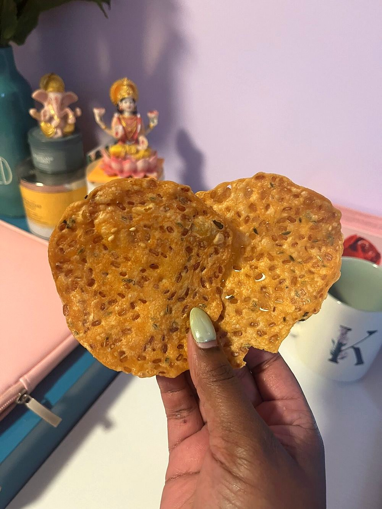

Contains: milk, sesame
Ingredients
Quantities for 20.
- 300g Rice Flour
- 3 tbsp, soaked 1 hour and drained Chana Dalthe studs; they should stay whole and crunchy
- 2 tbsp, roasted and ground Urad Dal
- 3 sprigs, torn Curry Leaves
- 1 tbsp Sesame
- 1/2 tsp Asafoetida
- 1 tsp Chilli Powder
- 40g Butter
- as needed Water
- 500ml for deep frying Neutral Oil
- to taste Salt
Cookware
stovetop, kadhai
Checked against the ingredient list for ten allergens: milk, egg, fish, crustaceans, tree nuts, peanuts, sesame, mustard, soy and gluten. Brands vary, so read the label on anything new to you.
Before you start
- Thattai means flat. They are pressed thin by hand between plastic sheets, not rolled.
- Prick each disc before frying or it puffs into a ball.
Method
- Mix the flours, soaked chana dal, torn curry leaves, sesame, asafoetida, chilli powder, salt and butter.
- Add water gradually to a stiff dough. It should not be sticky.
- Take small balls and flatten each between two greased plastic sheets into thin discs.
- Prick each disc several times with a fork.This is not optional. Unpricked thattai balloons and cooks unevenly.
- Fry on medium until the bubbling subsides and they are pale gold and rigid, about 4 minutes.
- Drain and cool completely before storing.
Storage
Keeps 3 weeks in an airtight tin at room temperature. If they soften, 5 minutes in a low oven brings them back.
Nutrition Good estimate
Low protein: 2 g a serving, 6% of the calories
| Per serving25 g | Per 100 g | |
|---|---|---|
| Calories | 114 kcal | 466 kcal |
| Protein | 1.7 g | 7 g |
| Carbohydrate | 14.2 g | 58 g |
| of which sugars | 0.3 g | 1 g |
| Fibre | 0.9 g | 4 g |
| Fat | 5.7 g | 23 g |
| of which saturated | 1.5 g | 6 g |
| of which unsaturated | 3.8 g | 16 g |
Nearest database match used for asafoetida, curry leaves, urad dal. Estimated from raw ingredients using USDA FoodData Central.
More like this: Vegetarian Indian recipes · Gluten-free Indian recipes · No onion no garlic recipes · Tamil Nadu recipes
Times, yields, allergens and nutrition are guidance. Use your own judgement on doneness and on storing. More in About.